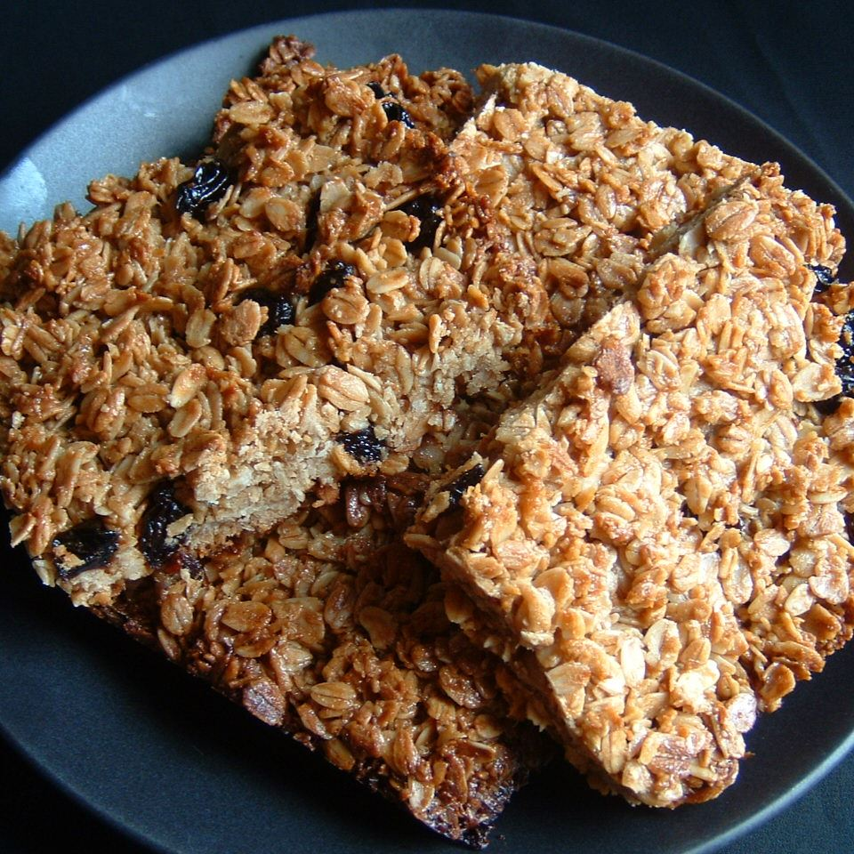

English Flapjack

Source
Description
Flapjacks have been eaten in British schools since the dawn of time. Well, according to students anyway.
Ingredients
- ½ cup butter or margarine
- ½ cup packed brown sugar
- 4 tablespoons golden syrup or corn syrup
- 3 cups rolled oats
- ¼ cup raisins
Steps
- Preheat the oven to 350 degrees F (175 degrees C).
- In a saucepan over low heat, combine the butter, brown sugar and golden syrup. Cook, stirring occasionally, until butter and sugar have melted. Stir in the oats and raisins until coated. Pour into an 7 or 8 inch square baking pan. The mixture should be about 1 inch thick.
- Bake for 30 minutes in the preheated oven, or until the top is golden. Cut into squares, then leave to cool completely before removing from the pan.